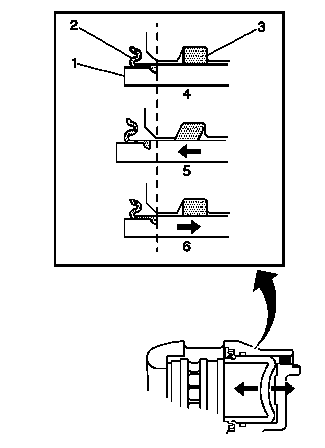

液压制动器部件操作的目视检查
-

1.拆下轮胎和车轮总成，并用车轮带耳螺母固定制动盘，然后目视检查制动钳活塞防尘罩 (2) 的密封部位，确保无制动液泄漏。
- 2.如果出现制动液泄漏迹象，则制动钳需要大修或更换。
- 3.在制动系统不工作时 (4)，观察制动钳活塞 (1) 与制动钳壳体的相对位置。
- 4.让助手踩下制动踏板并松开，重复数次，同时观察液压制动钳的工作情况。
- 4.1 在每次接合制动系统 (5) 时，观察制动钳活塞 (1) 的运动是否顺畅且均匀。
- 4.2 在每次松开制动系统 (6) 时，观察制动钳活塞 (1) 的回位运动是否顺畅且均匀。
- 5.在接合和/或释放制动系统时，如果制动钳活塞 (1) 运动不顺畅和不均匀，则活塞方形密封件 (3) 可能磨损或损坏，制动钳可能需要大修或更换。